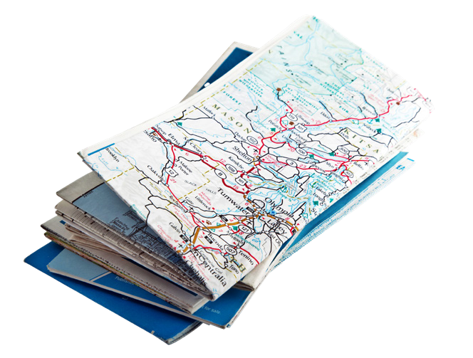

UN MAPA MINERO ANDALUZ
Seguid los pasos indicados a continuación para elaborar el mapa de las minas de Andalucía:
- Recopilad y ordenad toda aquella información que habíais adquirido en vuestras investigaciones.
- Hacedos con un mapa de Andalucía. Puede ser en formato digital o físico.
- Situad las minas en sus coordenadas exactas.
- Idead una leyenda de iconos que permita identificar las características básicas de las minas a simple vista.
- En los márgenes del mapa o en un documento anexo, mostrad la información que habéis recogido de vuestras fuentes, citándolas.
- Presentad en el aula los mapas mineros que habéis elaborado, explicando el proceso de creación y exponiendo las conclusiones que se pueden extraer tanto del producto final como del desarrollo del proyecto.

¿QUÉ HEMOS APRENDIDO?
SÍNTESIS DE SABERES BÁSICOS:
Realizad un resumen de la situación de aprendizaje y los conocimientos que abarca, incluyendo estas palabras clave que aparecen a continuación: geosfera, rocas metamórficas, cantera y acuífero.
AUTOEVALUACIÓN:
Resolved individualmente las siguientes preguntas:
- ¿En qué consistía la tarea?
- ¿Qué pasos he seguido para realizarla?
- ¿Qué he aprendido elaborando el mapa de las minas en Andalucía?
- ¿Cómo podría mejorar la próxima vez que diseñe un mapa?
- ¿Cómo me siento con el resultado final?
COEVALUACIÓN:
Evaluad el trabajo en equipo realizado y vuestro grado de satisfacción con el mismo y el producto obtenido, respondiendo a estas preguntas:
- ¿Hemos mantenido actualizado el kanban en las diferentes sesiones de trabajo?
- ¿Hemos calculado y distribuido bien el tiempo para cada una de las tareas realizadas?
- ¿Hemos resuelto con diálogo y respeto los desacuerdos surgidos durante las sesiones de trabajo?